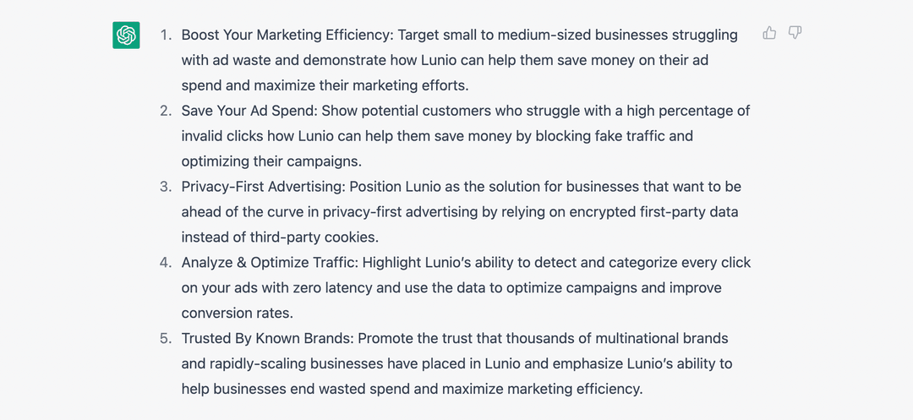
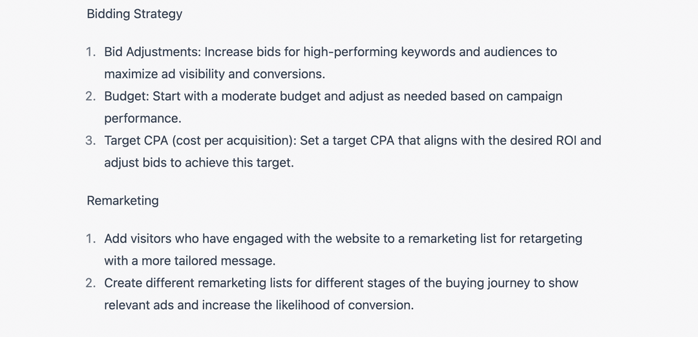
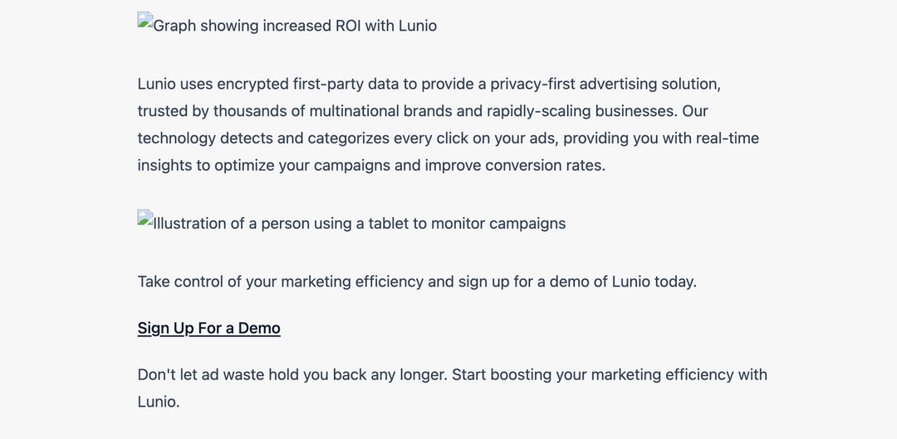
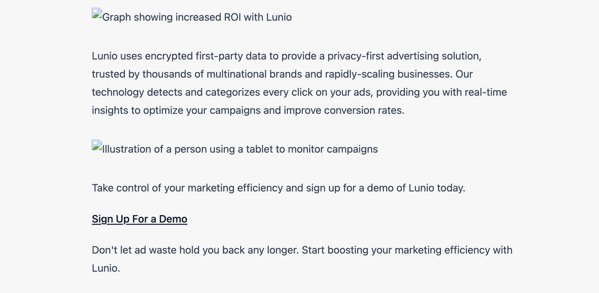
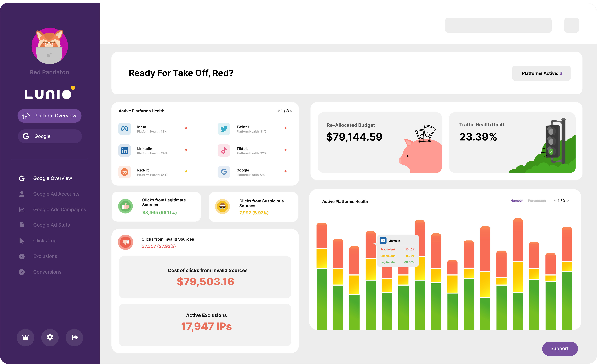

ChatGPT для PPC: 7-ступенчатая структура для автоматизации рекламных кампаний
Насколько эффективен ChatGPT для PPC?
Вкратце, очень.
Существует множество различных вариантов использования. И при должном подходе он способен на порядок повысить эффективность создания кампаний. То, на что раньше уходило два дня кропотливой работы, теперь можно сделать за 30 минут.
В этой статье мы расскажем о семи действиях, которые вы можете автоматизировать при использовании ChatGPT от Open AI для PPC, охватывая все - от исследования ключевых слов Google Ads до видеороликов TikTok.
Если вы выполните все описанные ниже шаги, у вас будет все необходимое для ведения рекламной кампании в платных поисковых и социальных сетях. Считайте, что это простая основа для быстрого запуска вашей PPC-активности с помощью искусственного интеллекта.
Тем не менее, результаты обработки естественного языка ChatGPT не идеальны. И, вероятно, они не будут полностью соответствовать тону вашего бренда. Но это можно решить с помощью небольшой доработки. В результате вы получите основу, которая уже на 80% готова к использованию.
Готовы создать свою следующую кампанию PPC в рекордно короткие сроки?
ChatGPT для PPC: 10 примеров применения
Каждый случай использования более подробно рассматривается в 7-шаговой схеме ниже (в комплекте с примерами). Вы можете пройти весь процесс от начала до конца. Или же воспользуйтесь приведенными ниже ссылками, чтобы узнать больше о случаях использования, наиболее подходящих для ваших нужд.
- Создание 5 идей платных рекламных кампаний для вашего бизнеса
- Создание 15 релевантных ключевых слов для вашего бизнеса
- Создание 5 идей идеальных клиентов для PPC-кампании
- Создание демографические характеристики, модели поведения и интересы на основе этих 5 целей рекламы
- Составление рекламной кампании PPC для вашего бизнеса
- Составление заголовков и описания объявлений PPC для вашей кампании
- Создание лэндинга продаж для вашей PPC-кампании
- Генерация идеи объявлений в Facebook и Instagram для вашего бизнеса
- Создание сценариев видео и рекламных объявлений для использования в TikTok и YouTube Shorts
- Создание сценария для 60-секундной рекламы на YouTube
Внимание: Всегда просматривайте и дорабатывайте результаты ChatGPT
Мы уже говорили об этом выше. Но это стоит повторить.
Реальная опасность заключается в использовании ChatGPT по принципу "поставил и забыл". Вы можете использовать Zapier, чтобы подключить его к множеству других маркетинговых платформ и позволить всему работать в полностью автоматизированном режиме без какого-либо контроля со стороны человека. Но это подвергает ваш бренд значительному риску по нескольким причинам:
- Фактические ошибки – ChatGPT иногда ошибается.
- Проблемы с тоном – выходные данные могут не полностью отражать тон вашего сайта.
- Избыточность – ненужное повторение некоторых слов и фраз.
- Соответствие требованиям и правовым нормам – версия рекламы от ChatGPT может не соответствовать отраслевым стандартам.
За исключением вопросов соответствия и юридических вопросов, есть несколько обходных путей, которые можно использовать для решения трех других распространенных проблем с выходом ChatGPT:
- Вы можете повысить фактическую точность ответов, скопировав и вставив соответствующие данные ниже вашей подсказки и начав с модификатора “На основе данных, приведенных ниже...”. Вы также можете установить расширение WebChatGPT Chrome, чтобы добавлять соответствующие веб-результаты к своим подсказкам для получения более точных и актуальных ответов.
- Чтобы заставить ChatGPT соответствовать тону голоса вашего бренда, скопируйте и вставьте одну из наиболее эффективных статей вашего блога вместе с подсказкой: “Перенесите тон голоса, который автор использовал для создания приведенной ниже статьи”. Сохраните результат, а затем добавьте его в качестве модификатора к будущим подсказкам, например, “Используйте позитивный и рекламный тон голоса”
- Чтобы свести к минимуму избыточность, просто добавьте “Избегать повторений” к соответствующим подсказкам.
На недавнем вебинаре мы беседовали с руководителем отдела платных медиа в Clickoo Гаретом Вестхедом, и он озвучил еще одну важную причину для дорабатывания всех ваших результатов:
Если все используют ChatGPT, существует реальный риск, что ваша рекламная копия будет выглядеть очень похожей на рекламу ваших конкурентов. Все будут похожи друг на друга, и ваше уникальное предложение будет утоплено в шуме. Человеческое творчество по-прежнему очень важно, поэтому разумно сохранять человеческий подход.

Гарет Вестхед
Руководитель отдела платных медиа в Clickoo
Учитывая эти важные предостережения, давайте перейдем к конкретным практическим примерам использования ChatGPT для PPC.
В приведенных ниже примерах мы будем использовать Lunio для наглядности. Но те же шаги будут работать для всех компаний, если вы соответствующим образом измените подсказки.
Прежде чем приступить к работе, создайте новый Google Doc и используйте его для записи всех результатов ChatGPT, которые вы генерируете. Затем вы и ваша команда цифрового маркетинга сможете совместно просматривать и дорабатывать их. Затем этот документ может стать образцом, который будет служить единой точкой отсчета для всех соответствующих рекламных материалов, связанных с вашей кампанией.
Совет: Для получения всех актуальных полезных подсказок ChatGPT добавьте FlowGPT. в закладки.
Идеи для кампаний PPC
Ваша первоначальная идея кампании - это фундамент, на котором строится все остальное. Она задает направление и фокус для всех остальных сопутствующих рекламных материалов и творческих активов.
Идея должна отражать одну из уникальных пунктов продажи вашего продукта или услуги и обращаться непосредственно к одной из ваших целевых аудиторий.
Но как вы можете сообщить ChatGPT о нюансах вашего продукта или услуги? Очень просто - скопируйте и вставьте текст с главной страницы вашего сайта или страницы продукта.
Если ваш сайт хорошо написан и кратко описывает ваше уникальное предложение, вы можете объединить ее с подсказкой, чтобы создать несколько первоначальных идей для PPC-кампании.
Подсказки для ChatGPT
- Можете ли вы предложить 5 идей рекламных кампаний на основе этих материалов?
- [Вставьте копию вашей домашней страницы или страницы товара ниже подсказки]
Совет: Перед вставкой вашего сайта пропустите его через этот инструмент разметки, чтобы убедиться, что ChatGPT сможет понять форматирование вашей страницы. Используйте этот инструмент и для других подсказок, где вы используете дополнительную информацию, которую лучше представить в таком виде.
Когда мы ввели эту подсказку в ChatGPT вместе с копией страницы Lunio, мы получили следующие идеи:
Это все разумные отправные точки. На основе этих 5 различных направлений мы можем создать остальные необходимые рекламные материалы кампании.
На этом этапе просто скопируйте и вставьте эти расширенные идеи кампании в свой Google Doc, чтобы позже доработать и отредактировать их.
Поиск ключевых слов
Поиск ключевых слов является основополагающей частью PPC с самого начала. Правильное его проведение имеет решающее значение для успеха в поисковых системах. Однако ручная работа может отнимать много времени.
Теперь же ChatGPT может сделать большую часть рутинной работы за вас за считанные секунды.
Подсказки для ChatGPT
- Создайте 15 [отраслевых] ключевых слов на основе этого сайта
- [Вставьте страницу товара ниже подсказки]
Вот ключевые слова, которые он предложил нам использовать в Lunio, используя подсказку “Создать 15 ключевых слов для маркетинга на основе этого сайта”.

Многие из этих ключевых слов жизнеспособны и заслуживают внимания. Но некоторые из них, такие как “carbon offset” и “trusted by leading brands” не принесут нам того трафика, который нам нужен. В этих случаях ChatGPT отобрал слова и фразы со страницы нашего продукта, которые не являются коммерчески релевантными.
Снова вставьте все эти ключевые слова в свой основной Google Doc. Но имейте в виду, даже если они выглядят так, как будто находятся в правильном диапазоне, каждое ключевое слово все равно необходимо проанализировать с помощью таких инструментов, как Ahrefs, Semrush или Moz, чтобы убедиться в их конкурентоспособности и экономической эффективности.
Вставьте каждое из них в инструмент анализа ключевых слов и сравните с другими наиболее эффективными ключевыми словами, прежде чем официально добавлять их в кампанию. Это позволит вам обеспечить показ релевантных объявлений при доступной стоимости клика (CPC).
Таргетинг рекламы и сегментация аудитории
Теперь, когда у нас есть идеи кампании и ключевые слова, пришло время подумать о ключевых демографических группах, которые мы хотим охватить рекламой. Они будут немного отличаться в зависимости от характера идеи кампании.
Подсказки для ChatGPT
- Можете ли вы создать 5 идей идеальных клиентов для кампании PPC на основе ключевых слов, которые вы создали, и идей кампании, приведенных ниже?
- [Вставьте ранее созданные идеи кампании]
Вот результаты, которые мы получили:

Особенно впечатляют предлагаемые отрасли, на которые мы ориентируемся для каждой идеи кампании.
Для подхода "Экономьте расходы на рекламу" ChatGPT рекомендует сосредоточиться на финансовом, страховом и технологическом секторах, которые имеют более высокую среднюю стоимость клика по сравнению с другими отраслями. Это означает, что они будут более чувствительны к сообщениям об экономии затрат в отношении PPC.
Кроме того, он правильно определил, что рынки здравоохранения, образования и юриспруденции будут особенно чувствительны к сообщениям о рекламных решениях, ориентированных на конфиденциальность.
Далее вы можете углубиться в каждую целевую аудиторию, попросив ChatGPT уточнить соответствующие демографические данные, поведение и интересы. В связи с предстоящим отказом от использования сторонних файлов cookie в 2024 году, становится необходимо включать подобные сигналы аудитории в целевые параметры ваших кампаний.
Этот момент тоже подчеркнул Гарет Вестхед на нашем недавнем вебинаре:
Вы должны тщательно проанализировать, кто является вашим идеальным клиентом, основываясь на данных о людях, которые уже покупали у вас. Затем вы можете использовать эти данные, чтобы нацелиться на похожих людей на основе поведения, ценностей и взглядов на жизнь. Теперь мы знаем, что на поведение людей при просмотре сайтов и совершении покупок в значительной степени влияют их взгляды на жизнь. Знание этого факта поможет вам в принятии решений при проведении кампаний.
Гарет Вестхед
Руководитель отдела платных медиа в Clickoo
Подсказки для ChatGPT
- Можете ли вы создать демографию, поведение и интересы аудитории на основе этих 5 целей рекламы?
Вот результаты, которые мы получили:


Они разумны, но далеко не идеальны. Проблемы повторения и избыточности ChatGPT здесь становятся очевидны. Для каждой идеи кампании предлагается одна и та же демографическая информация: "Владельцы малого и среднего бизнеса и лица, принимающие решения, в возрасте 25-55 лет, со средним и высоким уровнем образования и дохода."
Это достаточно точно на высшем уровне. Но он недостаточно точен, чтобы сделать таргетинг вашей кампании максимально эффективным. Чтобы улучшить демографические профили, обратитесь к собственным данным о клиентах, полученным от первых лиц, чтобы добавить больше деталей и нюансов. Чем конкретнее, тем лучше.
Поведение и интересы стали немного менее повторяющимися. Но, опять же, есть значительный простор для совершенствования. Добавьте эти данные в свой Google doc в качестве отправной точки, но убедитесь, что вы потратили время на их доработку, прежде чем добавлять их в свою кампанию.
Кампании и лэндинги
Именно в этом ChatGPT действительно преуспевает. Реклама и лэндинги традиционно являются наиболее трудоемкими аспектами создания кампаний PPC. Но с автоматизированными результатами машинного обучения в качестве отправной точки, это может сократить временные затраты вдвое.
Имейте в виду, что эта часть процесса является чрезвычайно коммерчески чувствительной. Реклама и лэндинги во многом определяют количество кликов и конверсию. И очень важно, чтобы сообщения, используемые для каждого из них, соответствовали остальным элементам вашего бренда.
Учитывая это, выделите достаточно времени для доработки рекламы и лэндингов, чтобы повысить эффективность работы. Это тот шаг в системе, где дополнительный человеческий контроль и творческий подход могут принести дивиденды.
Подсказки для ChatGPT
- Можете ли вы составить рекламную кампанию PPC на основе следующей целевой информации?
- [Вставьте первоначальную идею кампании]
- [Вставьте соответствующие ключевые слова]
- [Вставьте соответствующие детали таргетинга и сегментации аудитории]
Вот результаты, которые мы получили:

В дополнение к рекламной копии, ChatGPT также предоставляет предложения по всем другим аспектам кампании, включая расширение рекламы, стратегии торгов и идеи ремаркетинга.
Советы довольно общие. Если вы опытный профессионал PPC, вам, вероятно, не нужна дополнительная информация о расширениях, торгах и ретаргетинге.
Но создание рекламы, безусловно, полезно. Если это все, что вас интересует, вы можете изменить первоначальный запрос, чтобы создать больше вариантов для экспериментов.
Подсказки для ChatGPT
- Можете ли вы составить 5 заголовков и описаний рекламы PPC на основе следующей информации?

Затем вы можете повторить этот процесс для каждой отдельной идеи кампании, чтобы создать банк заголовков и описаний объявлений в вашем документе Google.
Далее, давайте воспользуемся ChatGPT для создания лэндинга, который увидят посетители, когда кликнут на одно из наших объявлений. С помощью подсказки ниже вы можете убедиться, что ваш результат отформатирован правильно, а также получить идеи изображений!
Подсказки для ChatGPT
- Можете ли вы создать лэндинг продаж, на который будет вести трафик эта рекламная кампания PPC? Включите изображения с alt-тегами и используйте форматирование в формате markdown
 

Этот вариант явно можно улучшить. Например, список преимуществ, предложенный ChatGPT, по сути, повторяет одно и то же 4 разными способами. Модифицированная версия, приведенная ниже, была бы гораздо эффективнее.
С Lunio вы получите следующие преимущества:
- Оптимизация коэффициента конверсии
- Более чистая аналитика, свободная от фейковых рекламных переходов
- Доступ к собственным данным о кликах
- Непревзойденная точность анализа трафика
Кроме того, копия H1 не настолько убедительна, как могла бы быть. "Превратить нерациональные рекламные расходы в рост доходов" гораздо лучше, чем "Повысить эффективность маркетинга с помощью Lunio".
Facebook & Instagram Image Ads
До сих пор мы фокусировались в основном на использовании ChatGPT в кампаниях поиска Google. Но платная социальная реклама - важная часть PPC. Это самый эффективный способ вызвать интерес у клиентов, которые еще не знают о вашем бренде и не обязательно готовы покупать прямо сейчас.
Отчет о настроениях в сфере потребительского опыта, опубликованный Merkle в 2021 году, показал, что 50% респондентов считают, что реклама в социальных сетях помогает им обнаружить новые продукты и услуги, которые их интересуют.
Так как же лучше всего использовать ChatGPT для генерирования спроса через рекламные кампании в социальных сетях? Логичным началом будет создание нескольких идей реклам на основе одного из предыдущих вариантов кампании.
Подсказки для ChatGPT
- Можете ли вы разработать идею рекламы на facebook и instagram на основе приведенной ниже информации?
- [Вставьте первоначальную идею кампании]
- [Вставьте соответствующие детали таргетинга и сегментации аудитории]
Интересно, что вторая рекламная идея, основанная на графике, очень похожа на один из элементов, уже присутствующих на главной странице Lunio. Довольно впечатляюще, учитывая, что на протяжении всего процесса мы не передавали ChatGPT копию нашей домашней страницы.
Но поскольку Lunio - бренд, основанный на иллюстрациях, первая идея с изображением владельца малого бизнеса, держащего в руках ноутбук, нам не подходит. Кроме того, если владелец бизнеса будет выглядеть напряженным, глядя на рекламу Lunio на экране, то это, скорее всего, передаст неверное послание. Может сложиться впечатление, что Lunio является источником его разочарования. Не каждая идея ChatGPT является выигрышной.
Вы можете запустить вышеуказанную подсказку для каждой первоначальной идеи кампании и сегмента аудитории. Получив несколько жизнеспособных вариантов, вы можете доработать их и начать процесс A/B-тестирования в Ads Manager, чтобы выбрать наиболее эффективные.
Короткие рекламные ролики
Видеореклама стала доминировать в социальных сетях. В 2022 году расходы на видеорекламу в соцсетях выросли на 20,1% до 24,35 млрд долларов. И с ростом популярности видеоконтента в TikTok, Instagram Reels и YouTube Shorts становится важно добавить этот формат контента в вашу стратегию PPC.
Самый простой способ сделать это с помощью ChatGPT - попросить его преобразовать ваши предыдущие идеи объявлений с изображениями в короткие видеосценарии.
Подсказки для ChatGPT
- Можете ли вы создать сценарии для видеорекламы, которую мы можем использовать на TikTok и YouTube shorts на основе 2 идей рекламы выше?
ChatGPT предоставит вам сценарий закадрового голоса и примерную раскадровку идей сцен. Чтобы превратить эту идею в готовое видео, потребуется немало дополнительной работы. Но все основы уже заложены, что даст вам вдохновение и хороший старт.
Длинноформатная видеореклама
Под длинной формой мы подразумеваем продолжительность около 60 секунд. Такой формат контента идеально подходит для пропускаемых объявлений, которые появляются в начале видеороликов на YouTube. Они идеально подходят для ретаргетинга PPC-кампаний.
Ретаргетинг YouTube позволяет повторно обратиться к посетителям, которые перешли на ваш сайт из поисковой и социальной рекламы, но ушли без покупки. И цифры показывают, что это особенно эффективно:
- Вероятность конверсии посетителей сайта, ориентированных на ретаргетинг, на 43% выше
- Ретаргетинг может увеличить поиск по названию бренда на 1,406% - из шести различных стратегий размещения рекламы ретаргетинг обеспечил самый высокий прирост.
Если вы уже платите за трафик через поиск Google и рекламу в соцсетях, имеет смысл извлечь выгоду из этих посещений с помощью ретаргетинга YouTube. Но сначала вам понадобится 60-секундная реклама.
Подсказки для ChatGPT
- Можете ли вы создать видеосценарий для 60-секундной рекламы на YouTube на основе комбинации двух вариантов сценария, которые вы создали выше??
Мы не стали приводить полный текст сценария выше, так как он довольно длинный. Но вы поняли суть. В нем взяты элементы из двух сценариев короткой формы и объединены для создания рекламы, которое, вероятно, найдет отклик у владельцев бизнеса, заинтересованных в повышении эффективности маркетинга производительности.
Хотя концепция довольно точна, ей не хватает оригинальности и творческой жилки. Но, скорее всего, при небольшой доработке и профессиональном качестве производства она обеспечит приемлемые показатели кликов и конверсии. Тем не менее, это впечатляет.
Устранение нерациональных расходов на рекламу в поисковых и социальных сетях
Сочетание 7 шагов, описанных выше, даст вам все необходимое для запуска эффективной PPC-кампании менее чем за 30 минут. Это значительно повышает эффективность.
Но всегда есть одно и то же предостережение: он не совершенен. Относитесь к ChatGPT как к стажеру - приготовьтесь потратить некоторое время на проверку работы и ожидайте ошибок. В противном случае вы рискуете поплатиться снижением эффективности кампании и потенциальными юридическими проблемами.
И если вы более эффективно используете свое время, вы должны быть более эффективны и в расходовании рекламных средств. Автоматически устраняя все фейковыеИ если вы более эффективно используете свое время, вы должны быть более эффективны и в расходовании рекламных средств. Автоматически устраняя все фейковые рекламные переходы, Lunio конвертирует потраченные впустую средства в дополнительные конверсии и продажи во всех рекламных сетях, включая Google, Meta, LinkedIn, TikTok и другие. рекламные подключения, Lunio конвертирует потраченные впустую средства в дополнительные конверсии и продажи во всех рекламных сетях, включая Google, Meta, LinkedIn, TikTok и другие.
Просто разверните скрипт отслеживания через выбранный вами менеджер тегов и позвольте проактивным, самообучающимся алгоритмам Lunio анализировать и фильтровать ваш платный трафик, чтобы направить 100% вашего бюджета на реальных клиентов.
Хотите увидеть Lunio в действии и узнать, во сколько обходится вашему бизнесу фейковый трафик?